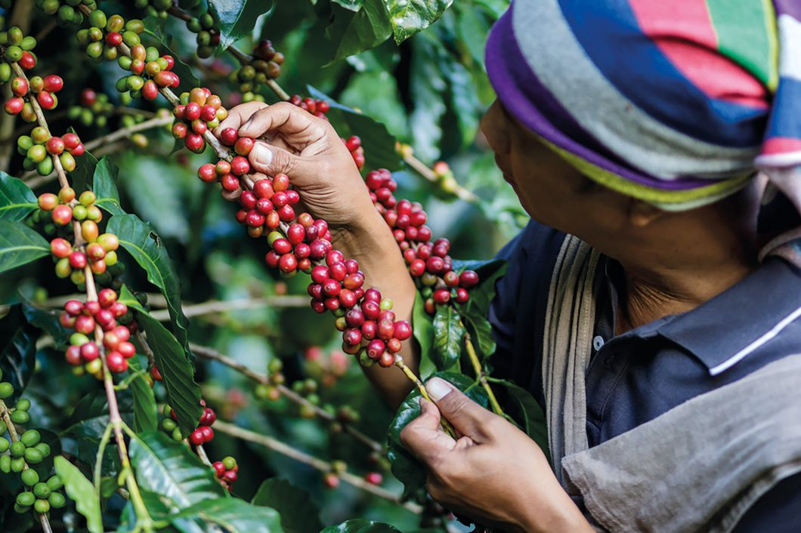
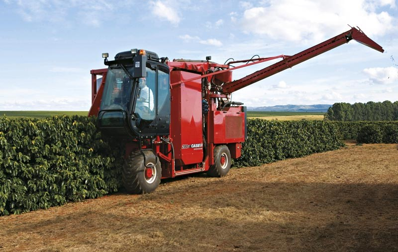

Une fois les cerises de café mûres, elles sont récoltées. Il existe deux méthodes principales :
|  | La récolte manuelle (cueillette sélective)Cette méthode consiste à cueillir uniquement les cerises mûres, celles qui ont atteint leur couleur rouge vif. C’est un travail délicat, effectué par des cueilleurs formés. Chaque cerise est examinée et cueillie à la main pour éviter de récolter des fruits immatures ou trop mûrs. Elle permet de garantir une qualité élevée du café. |
La récolte mécanique (cueillette mécanique)Utilisée principalement pour les grandes plantations, cette méthode consiste à secouer les branches des caféiers pour faire tomber toutes les cerises, sans les trier. Bien que plus rapide, elle produit souvent un café de qualité inférieure, car elle inclut des cerises immatures et trop mûres, ce qui peut affecter le goût du café. |
 |